Mapping HPC drives with Samba
Warning
-
Samba now uses campus AD for user authentication, if you are unable to login and have not updated your NetID password recently please try updating your NetID password before opening a ticket
-
This will only work if your computer has a university IP address. If you are off campus, you can use the MSU VPN to obtain an MSU IP, which is available to all graduate students, staff and faculty.
-
If file transfer speed is a concern please use our Globus endpoint.
The following tutorial will show you how to map your HPC home or research directory using SMB or CIFS File Sharing.
Determining your Network Path
We have the powertools command show-samba-paths to show all
paths of your home and research space. Run these commands in your SSH client after logging on to the HPCC:
1 2 3 4 5 6 7 8 9 10 11 12 13 14 15 16 17 18 19 20 21 22 | |
where the paths are the same for Mac and Window computers but with different formats.
Windows 10
Step 1. Enable NetBIOS over TCP/IP on Windows:
- Click on the Network icon on the taskbar at the right hand side and
click on "Network & Internet settings"
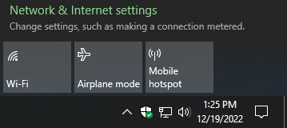 - Click on Change adapter options 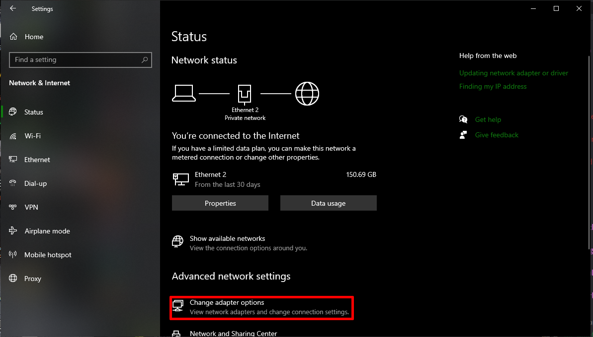
- Right click on your Network interface that is used to connect to the internet (here, Ethernet 2) and click on Properties 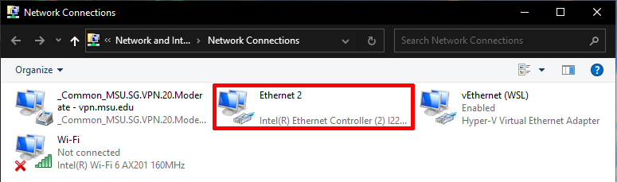
- Select the Internet Protocol version 4 (TCP/IPv4) 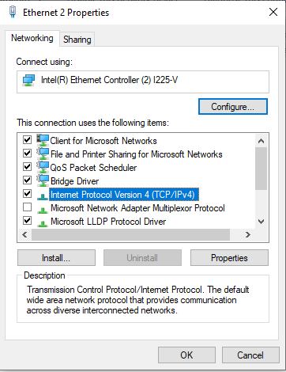
- Click the Advanced button under the General tab. 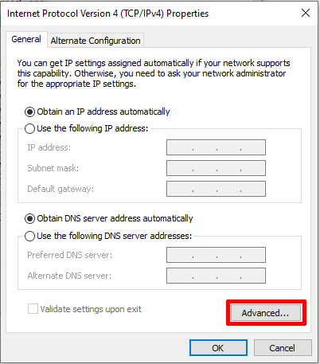
- Click the WINS tab.
- Click the Enable NetBIOS Over TCP/IP button. 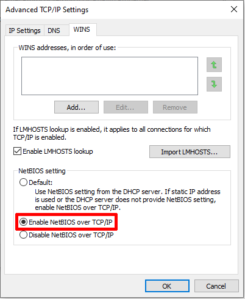
- Click Ok
Step 2. Disable SMB1
Disable Samba V1 protocol with PowerShell
-
Press the Windows start button
-
In the search box type "power shell"
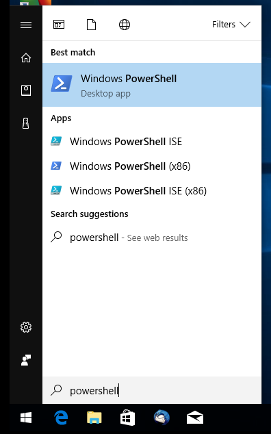 -
Right click on the "Windows PowerShell" icon and select "Run as Administrator"
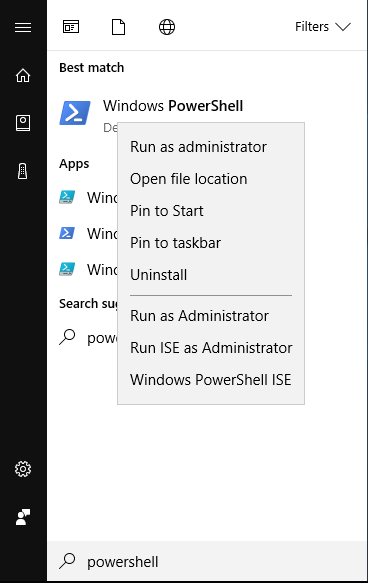 -
Select Ok when security warning appears
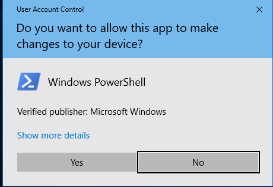 -
Disable Samba V1 by entering the following command into the windows power shell.
1Set-ItemProperty -Path "HKLM:\SYSTEM\CurrentControlSet\Services\LanmanServer\Parameters" SMB1 -Type DWORD -Value 0 -Force -
Ensure SMB V2 and SMB V3 are enabled by entering the following command. In the past, on some versions of windows and for some file systems we recommended the opposite of this setting. Running this ensures it's enabled again.
1Set-ItemProperty -Path "HKLM:\SYSTEM\CurrentControlSet\Services\LanmanServer\Parameters" SMB2 -Type DWORD -Value 1 -Force -
Navigate to "This PC" and click on the text labeled "Map Network Drive" at the top of the screen, located under the "Computer" tab.
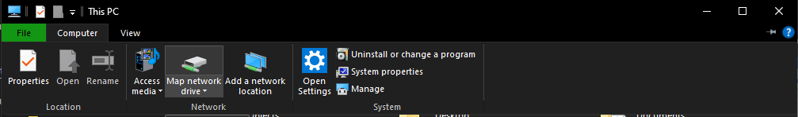
From this menu you need to type your Network Path. Please see #Determining your Network Path for help
-
Once you have typed in your Network Path you need to click on the box "Connect using different credentials." This will open a window where you type in your MSU NetID and password: 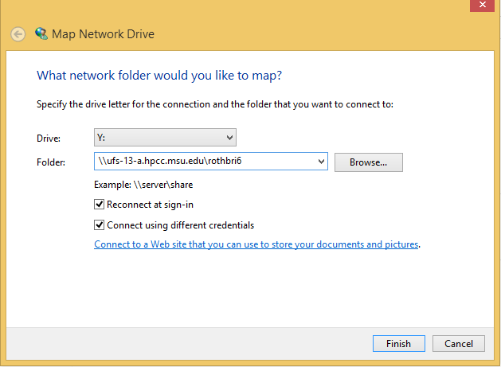
Warning
If you aren't able to sign in, You will need to add "CAMPUSAD\" to the beginning of your username. An indicator of this issue is if Windows displays the error "The specified network password is not correct" in the username dialog window.
For example: substitute "CAMPUSAD\sparty" for username "sparty" in the username field. The slash character is a backslash. A forward slash character will not work.
-
Finally, select "Finish" and you will see your system trying to connect
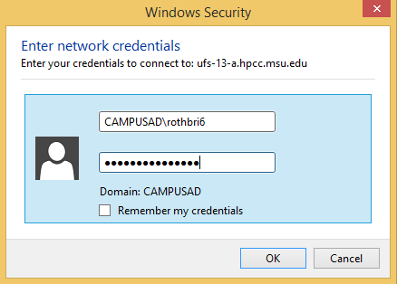
Command-line Windows NetBIOS Commands
If you're working in Windows, you can use command line tools to manage your drive mapping. These commands also work in .bat files, if you're so inclined to connect/disconnect drives in that manner. Note you may also have to Disable SMBV1 and Enable SMB2 per instructions above.
- From the Start Menu -> Run -> type 'cmd' in the box and hit enter, the command shell should open. You can then use the following commands to diagnose, disconnect and connect drives.
1 2 3 4 5 6 7 8 9 10 11 12 13 14 15 16 17 18 19 20 21 22 23 24 25 26 27 28 29 30 31 32 33 34 35 36 37 38 39 40 41 42 43 44 45 46 47 48 49 50 51 52 53 54 55 56 57 58 59 60 61 62 63 64 | |
MacOS Example
- Open the Finder.
- Under "GO" click on "Connect to Server"
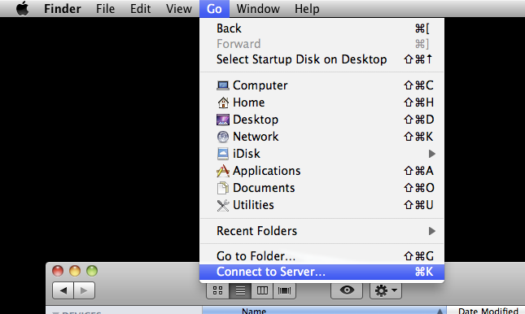 - From this menu you need to type your Network Path. Please
see #Determining your Network
Path for
help.
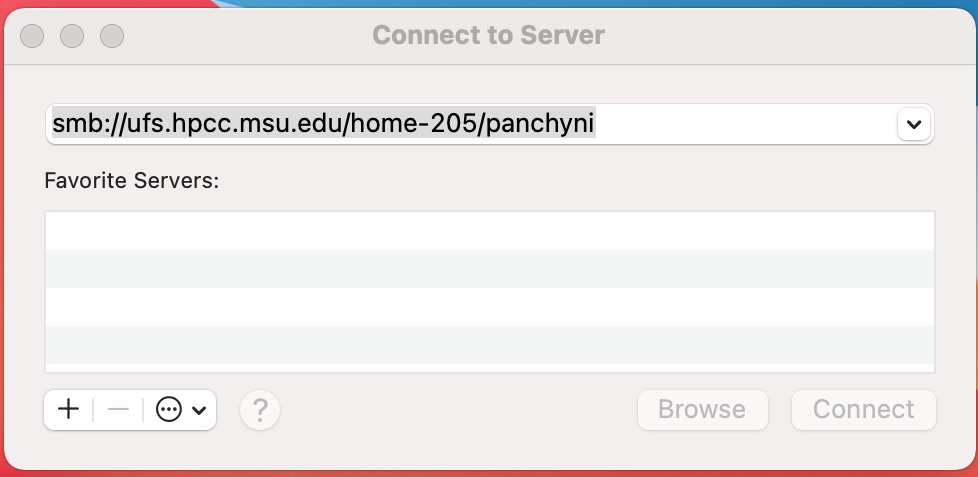 - Enter your MSU NetID and password for authentication and click
"Connect".
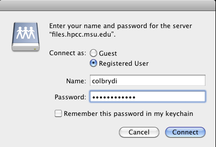
Linux
-
Install smb-client
Ubuntu / Debian
1apt install smbclientRed Hat / Fedora
1yum install samba-client -
Edit /etc/samba/smb.conf
1sudo vi /etc/samba/smb.conf -
Add the following lines to disable samba V1
This step must be completed or your client will not be able to map the drive. If you have other mounts on on the HPC cluster and they are using samba V1 they will stop working. In this case please use SSHFS.
1 2
client min protocol = SMB2 client max protocol = SMB3
Ubuntu Mount Example
- Open a File Browser window. In the left pane select "Other Locations"
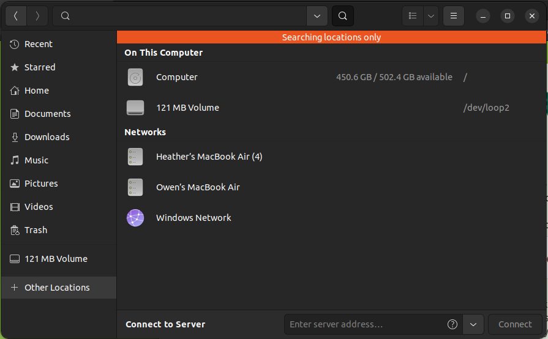 -
Type your network path in the server address box. Remember to get your network path using
show-samba-pathson the HPCC (Format is the same as the Mac format)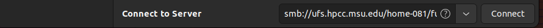 3. An authentication window will open. Select "Registered User". Enter your user ID and password (Domain can remain WORKGROUP) and click connect.
Note
Your username must include @msu.edu.
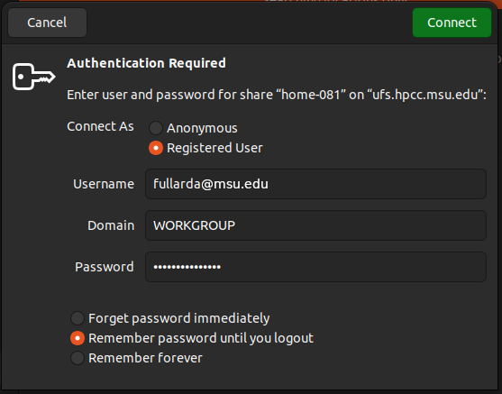 4. If connected properly the drive should appear in the file manager screen.
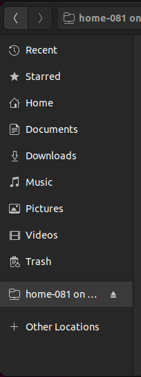
-
After successfully mounting, you can unmount using the eject button in the file manager, and reconnect later using the dropdown list next to the Connect to Server box.